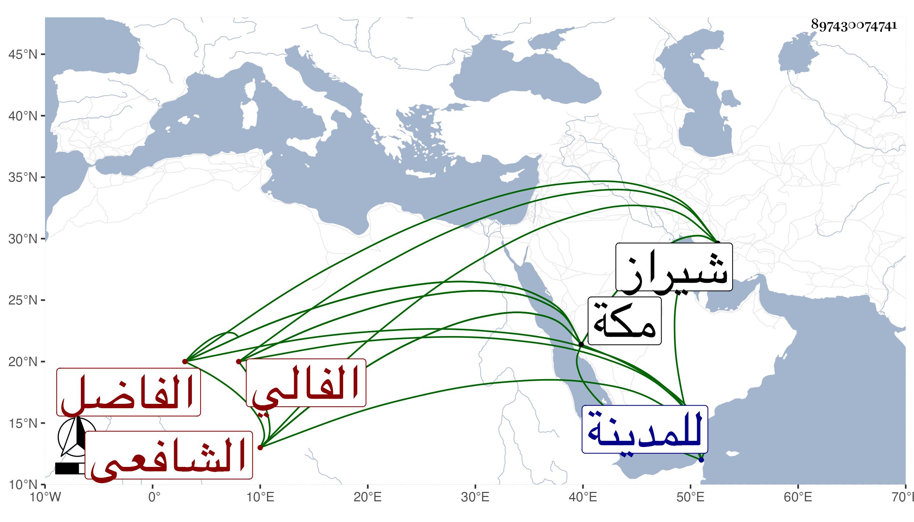

0902Sakhawi.DawLamic.ITO20230111-ara1.EIS1600.897430074741
Biography ID: 897430074741
658
أحمد بن نعمة الله بن عبد الكريم بن محمد بن يحيى بن أبي المجد ابن أبي البقاء بن مكرم الفاضل نور الدين أبو البقاء بن كمال الدين بن نور الدين الفالي السيرافي الشافعي سبط العز إبراهيم بن مكرم الماضي . ولد سنة ست وخمسين وثمانمائة واشتغل على أبيه في النحو والصرف والمعاني والبيان والفقه ثم على جده لأمه ومما قرأه عليه شرح القطب على الشمسية مع حاشية السيد وسمع أكثر شرح التلخيص في المعاني والبيان مع شيء من الكشاف وبعض الحاوي الصغير وسائر شرح المنهاج الأصلي للعبري ودخل شيراز فأخذ أصول الدين والنظر والفقه عن الجلال محمد بن أسعد الصديقي الدواني والمعين جنيد العمري الشيرازيين ، وقدم مكة في موسم سنة ست وثمانين فأقام بها مع خاله العلاء محمد إلى أثناء ربيع الأول من التي بعدها وتوجها للمدينة ثم رجعا في قافلتنا أواخر شعبان واستمرا بمكة بقية السنة ثم عادا مصحوبين بالسلامة وقد لازمني في الحرمين دراية ورواية في تصانيفي وغيرها وحمل عني جميع الهداية الجزرية بحثا وغالب ألفية العراقي وسمع بعض شرحي ومن لفظي جميع القول البديع وقرأ علي أشياء وكتب لي تراجم جماعة من أقاربه ، وكتبت له إجازة حافلة كتبت ملخصها في التاريخ الكبير ونعم الرجل فضلا ومحاسن .
